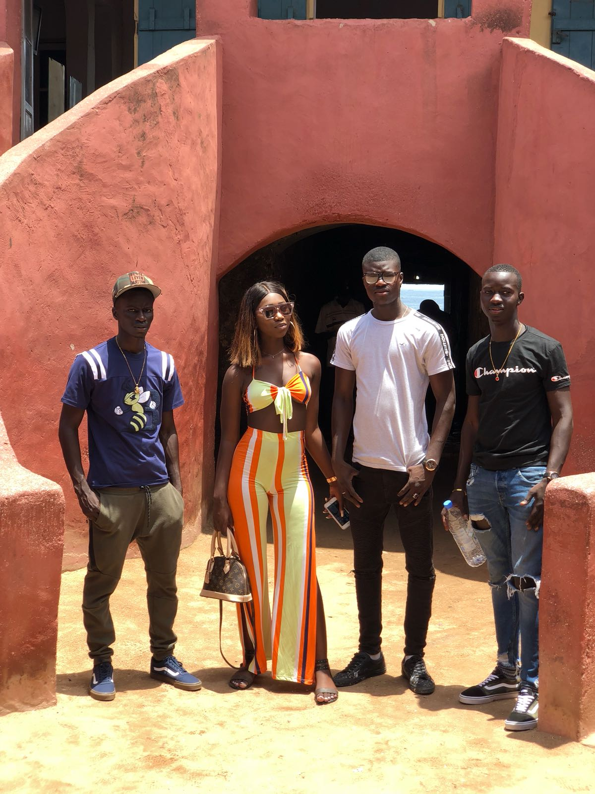
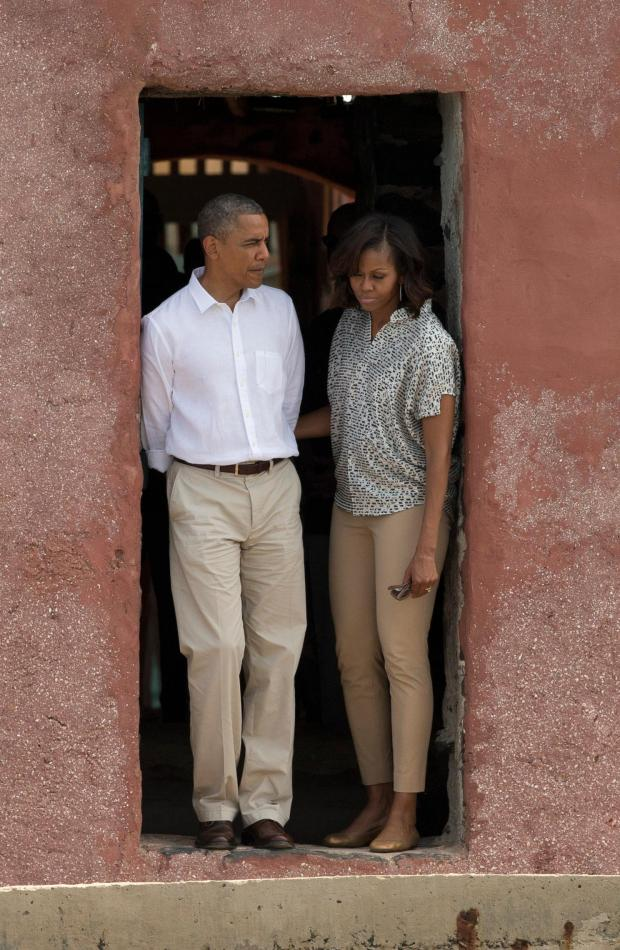

Île de Gorée (Gorée Island) is one of the 19 communes d'arrondissement (i.e. districts) of the city of Dakar, Senegal. It is an 45-acre island located 2 kilometres 1.2 mi at sea from the main harbour of Dakar (14°40′N 17°24′W), famous as a destination for people interested in the Atlantic slave trade although its actual role in the history of the slave trade is the subject of dispute.Its population as of the 2013 census was 1,680 inhabitants, giving a density of 5,802 inhabitants per square kilometre (15,030/sq mi), which is only half the average density of the city of Dakar. Gorée is both the smallest and the least populated of the 19 communes d'arrondissement of Dakar.
 